With
you can run, search, sort by category, add to favorites and update scripts.
You no longer need to create a button in the interface, or search for files of scripts, all is now in one place.
Scripts Launcher get list of scripts from:
You no longer need to create a button in the interface, or search for files of scripts, all is now in one place.
Scripts Launcher get list of scripts from:
\\visco.local\data\Instal_Sync\scripts\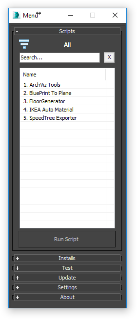
Features:
- Scripts list
- Quick search
- Filter by category
- Favorites
- Updates
- Dock window
- Quick info and help about each script
- Quick install *.mzp and *.mcr plugins
- Notification when script updated or added
- Remember window position
- Test scripts feature
- Settings saving
- And other
In the version of
used Universal Installer,
which allows you to automatically copy necessary files,
and add the button to the Tool Bar.
Or execute from Scripting → Run Script.
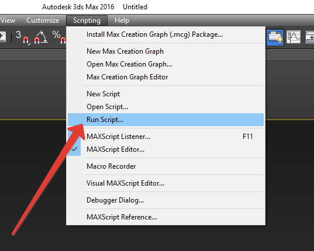
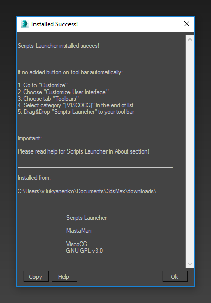
In the 3Ds Max ToolBar will automatically created button:
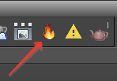
If this button not created jus run the 3Ds Max by Administrator. And try again Step 1.
and add the button to the Tool Bar.
Step 1
Go to:\\visco.local\data\Instal_Sync\scripts\
Step 2
Run the installer, just Drag&Drop INSTALL.mcr in to 3D Studio Max window.Or execute from Scripting → Run Script.
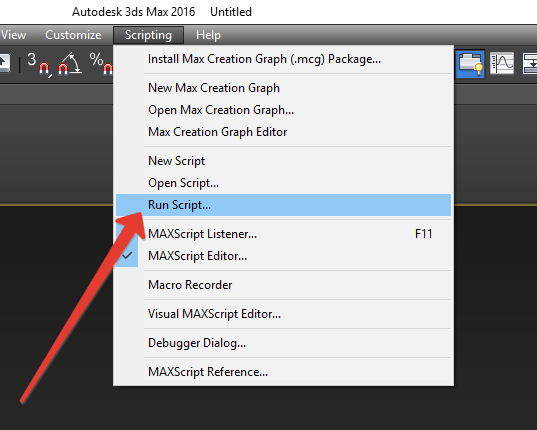
Step 3
After run the installer you can see the next window.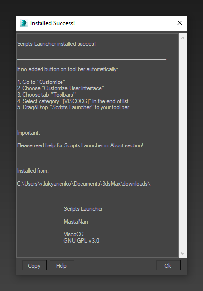
In the 3Ds Max ToolBar will automatically created button:
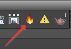
If this button not created jus run the 3Ds Max by Administrator. And try again Step 1.
Step 4
Press the Ok button for close the window. Run the script from ToolBar.
Select script from list.
Press Enter, or press Run Script for launch the script.
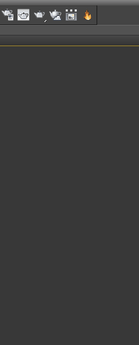
Select script from list.
Press Enter, or press Run Script for launch the script.
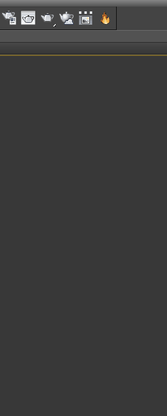
Search bar halps to find a script by any part of its name.
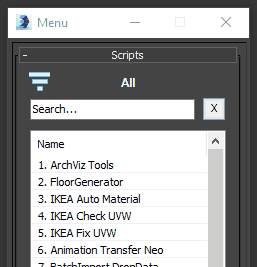
To clear search bar press Esc or button Clear.
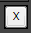
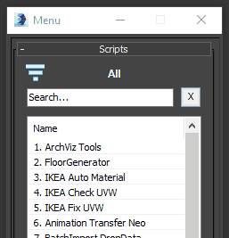
To clear search bar press Esc or button Clear.
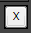
Some Scripts were created for certain needs and teams, that is why they were placed to special cathegories.
There are also has three service categories: All, Favorite and Custom.
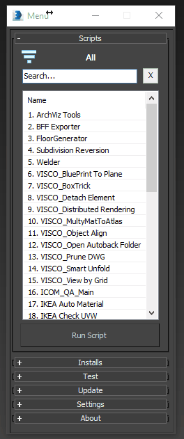
All - displays all the scripts.
Favorite - displays only scripts which marked as favorite.
Custom - displays scripts added from your pc (Scripts won't be available for other user).
There are also has three service categories: All, Favorite and Custom.
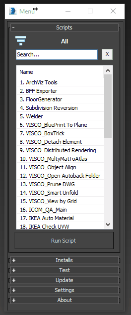
All - displays all the scripts.
Favorite - displays only scripts which marked as favorite.
Custom - displays scripts added from your pc (Scripts won't be available for other user).
Some Scripts were created for certain needs and teams, that is why they were placed to special cathegories.
List of favourites allows user to store frequently used script in one place.
It helps not to get lost in a large amount of scripts.
List of favourites allows user to store frequently used script in one place.
It helps not to get lost in a large amount of scripts.
Adding to Favorites:
- Select script in the list
- Press right mouse button → Add to Favorites
- Open tab Favorite
Removing from Favorites:
- Select Favorites category
- Select script in list
- Press right mouse button → Remove from Favorite
If you want to add local scripts from your computer you can do it here.
Adding to Custom:
- Select Custom category
- Press right mouse button → Add to Custom
- Select script
How to delete from Custom:
- Select Select Custom category category
- Press right mouse button → Remove from Custom
In this section we placed the scripts which can't be run from the list, the ones that better to launch as a toolbar button or from right-mouse-button menu.
To instal just select the script from dropdown menu and press Install.
After installation you should see information about success process and how to add button on toolbar.
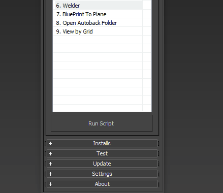
To instal just select the script from dropdown menu and press Install.
After installation you should see information about success process and how to add button on toolbar.
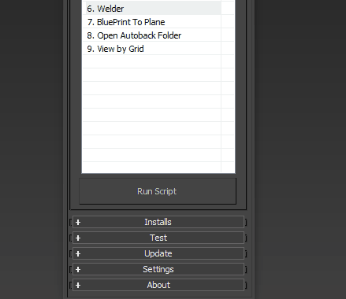
Automatically update:
You will get latest versions of the scripts each time you open the Scripts Launcher.But if you want to get updates during the work session just open Update rollout and press Update Scripts button.
If new releases of the scripts were founded you should receive notification.

If you want to see some information about the script and version changes history just select script in list,
press right mouse button and choose Info about script option.
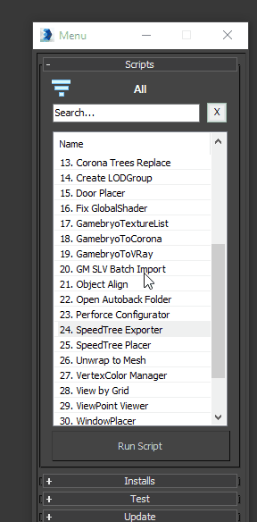
In information window you can find information about: releases, version, author, help, overview.
press right mouse button and choose Info about script option.
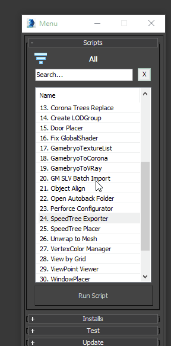
In information window you can find information about: releases, version, author, help, overview.
Note!
Not all the scripts have such Info window, just the ones adopted for the Scripts Launcher.
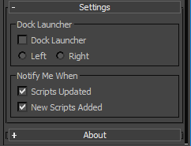
Dock Launcher - pin Scripts Launcher window to left or right side of screen.
Notify Me When - turn on/off notification about updated scripts and newest scripts.
Dock Launcher - pin Scripts Launcher window to left or right side of screen.
Notify Me When - turn on/off notification about updated scripts and newest scripts.
Idea: Eugene Astafiev
Author:
Version:
© Visco. All rights reserved.
Universal Help by v.
Versions history:
1.0.0 * First release 1.0.1 + Add buttons All and Favorite + Add icon 1.0.2 + Add update feature 1.1.0 * Changed window width + Add dock feature (Configure in Settings) 1.2.0 * Small improvements * Quick search by first word + Add notify features (Configure in Settings) + Add feature get info about any script (Context menu) + Add Info button in About rollout + Add Help button in About rollout 1.2.1 - BugFix: Small fix for 3Ds Max 2012 1.2.3 * Added Installs rollout for quick install plugins - BugFix: New versions notify 1.2.4 * Adopted for ArchViz 1.2.5 + Added: Added Test section 1.3.0 + Added: Categories + Added: Filter by category - Removed: Buttons All and Favorite 1.3.1 + Added: Category Custom for add custom scripts 1.3.2 * Improved INSTALL.mcr + Added: Installation scripts to interface 1.3.3 - BugFix: Notify updated scripts 1.4.0 + Added: Create button for every script by Right Click Menu - Removed: Installs → Install Script featature 1.4.1 * Changed: Filter by category. Now you can select few categories * Improved Help